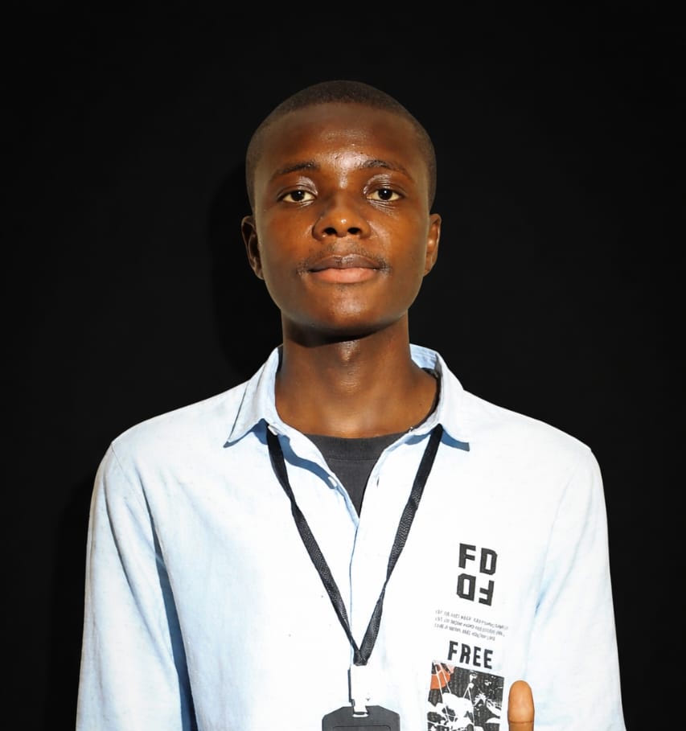

Bonjour, je suis Gael KAPIMO KANIKI
Je suis un developeur mobile native et web full-stack, je suis en L2 passionné par le mobile
Voir mes Projets
A Propos
Bonjour! je m'appelle Gael KAPIMO KANIKI et je suis un étudiant dynamique et motivé en informatique à l'UDBL. Passionné par le développement web, l'intelligence artificielle, et le design graphique, je suis constamment à la recherche de nouvelle opportunités d'apprentissage et défis stimulants.
Au cous de mes études, j'ai dévelppé de solides competences en programmation. Je suis une personne rigoureuse, créative et j'aime travailler en équipe pour attteindres de objectifs communs. Mon objectif est de contribuer à des projets innovants, trouver un stage, maitriser le Framework Laravel.
Mes compétences
| CATEGORIES | COMPETENCES | NIVEAU |
|---|---|---|
| Programmation | HTML, CSS, JavaScript, Python | Avancé |
| Design | Figma, PhotoShop(bases) | Intermmédiaire |
| Langues | Français(natif), Anglais(fluide) | Avancé |
| Outils | Git, Vs Code, Suite OFfice | Avancé |
| Soft Skills | Commmunication, Resolution des problemes, Autonomie | Expert |